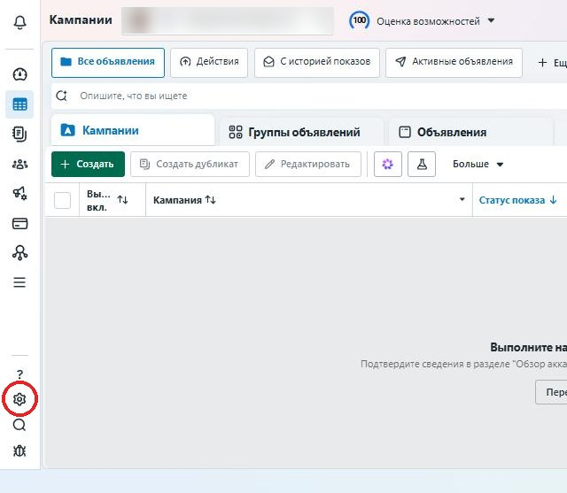
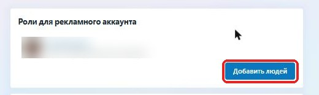
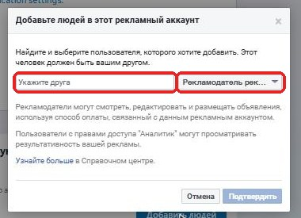
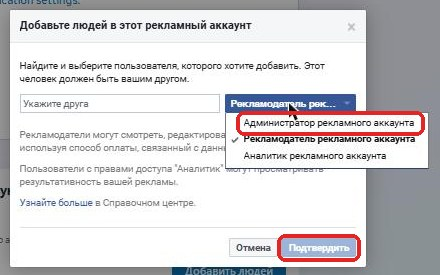

Натискай «Готово» після кожного кроку, смужка зверху покаже, скільки лишилося.
Натисни на посилання, воно відкриється в новій вкладці:
business.facebook.com/settings
У меню зліва натисни по черзі:
Потім праворуч або вгорі синю кнопку:
Відкриється вікно «Призначити доступ до ресурсів». Зліва будуть типи ресурсів. Пройди кожен пункт зі списку:
Напиши їй у месенджер, що запрошення надіслано. Вона прийме його зі своєї пошти, і статус зміниться на активний. Більше нічого робити не треба.
Натискай «Готово» після кожного кроку, смужка зверху покаже, скільки лишилося. Скріншоти зроблені в російськомовному Facebook. Якщо в тебе він українською, написи будуть українською, а кнопки на тих самих місцях.
Це обов'язково: Facebook дозволяє дати доступ до реклами лише людині, яка є в тебе в друзях.
На комп'ютері, де ти зайшла у свій Facebook, відкрий:
У вузькій смужці зліва, внизу, є значок ⚙. Натисни на нього, відкриються «Налаштування рекламного акаунта».

Прокрути сторінку вниз до блоку Ролі для рекламного акаунта і натисни синю кнопку Додати людей.

У лівому полі «Вкажіть друга» почни писати Ольга Восканян і обери її у списку, що випаде.


Без доступу до сторінки Ольга не зможе запускати рекламу від твого імені.
Скажи їй, що доступи надіслано. Якщо щось не знайшлося, зроби скріншот і надішли їй.
Ольга отримає запрошення і далі сама все налаштує. Тобі треба лише стежити, щоб на картці були гроші на рекламу.